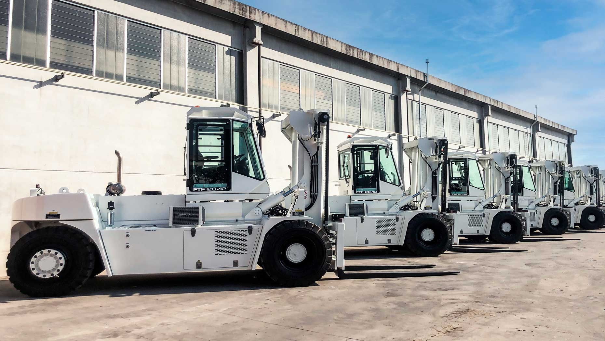

De Meo z zadowoleniem przyjmuje odrzucenie przez Włochy normy Euro 7

Luca de Meo, dyrektor generalny francuskiego producenta samochodów Renault, który sam jest Włochem, podziękował włoskiemu rządowi za odrzucenie proponowanych przez ten kraj nowych przepisów dotyczących normy emisji spalin Euro 7 . Według Automotive News Europe, jako prezesa europejskiego lobby motoryzacyjnego ACEA, mogłoby to odwrócić uwagę przemysłu motoryzacyjnego od drogi ku elektryfikacji. Zaostrzenie dopuszczalnych wartości emisji zanieczyszczeń, które mają obowiązywać od 2025 r. dla samochodów osobowych i dostawczych oraz od 2027 r. dla ciężarówek i autobusów, będzie negocjowane między krajami UE a ustawodawcami jeszcze w tym roku. Ustawa ta jest wdrażana równolegle z uchwalonym już „ zakazem silników spalinowych” , który zacznie obowiązywać od 2035 r. i który pozwoli na rejestrację wyłącznie samochodów osobowych bez szkodliwych dla klimatu emisji. Jednak tylne drzwi są nadal otwarte dla tak zwanych e-paliw . „Chcą wprowadzić nowe przepisy, które odciągną nas od naszego zadania, jakim jest przekształcenie branży ”, mówi de Meo Automotive News Europe. Chciałby, aby Komisja Europejska ponownie rozważyła plany wdrożenia tego nowego standardu. Dlatego popiera negatywne nastawienie swojego kraju – powiedział na imprezie w Trydencie. „Włochy zajęły bardzo jasne stanowisko w tej sprawie i dziękujemy temu krajowi za wsparcie ” – powiedział tam. Włoski rząd w osobie ministra transportu Matteo Salviniego ogłosił niedawno, że znalazł w Europie wystarczającą liczbę zwolenników, którzy również chcieliby odrzucić nową normę emisji, aby temu zapobiec. Są to najwyraźniej głównie kraje Europy Wschodniej. Można by przypuszczać, że nowe przepisy mogą sprawić, że pojazdy spalinowe będą droższe o kilka tysięcy euro, a mówi się o ponad 10 000 euro za autobusy i ciężarówki. Z kolei według doniesień medialnych UE przyjmuje w swoich kalkulacjach kilkaset euro za samochody osobowe i 2800 euro za większe pojazdy.
Ford postrzega chińskich producentów jako najostrzejszą konkurencję
Dyrektor generalny Forda, Jim Farley, powiedział Automotive News, że chińscy producenci samochodów elektrycznych są jego głównymi konkurentami. I że Ford ma również problemy z konkurowaniem pod względem kosztów na mniejszą skalę. Chińczycy są postrzegani jako „główni konkurenci, a nie GM czy Toyota, Chińczycy będą siłą napędową ”, powiedział Farley na szczycie Morgan Stanley Sustainable Finance Summit. Dyrektor generalny Forda wyjaśnia, że największy na świecie rynek samochodowy, Chiny, mają jedną z najlepszych technologii akumulatorowych i dominują w produkcji pojazdów elektrycznych. Wymienił BYD , Geely , Great Wall, Changan i SAIC jako „zwycięzców” wśród chińskich producentów samochodów. Farley powiedział, że aby pokonać chińskich producentów samochodów, Ford potrzebuje charakterystycznego brandingu, który, jak twierdzi, ma, lub niższych kosztów. „Ale jak możesz ich pokonać pod względem kosztów, skoro są pięć razy większe od nas?”, jak powiedział Farley. „Europejczycy wpuścili (chińskich producentów samochodów) – a teraz sprzedają hurtowo w Europie”. W związku z tym Ford pozycjonuje się szeroko na swoim rodzimym rynku w USA. I ogłosił w lutym, że zainwestuje 3,5 miliarda dolarów w budowę fabryki akumulatorów do pojazdów elektrycznych w Michigan, wykorzystując technologię chińskiego partnera CATL do produkcji tańszych akumulatorów. W międzyczasie rynek krajowy również boryka się z trudnościami. Dzięki Tesli. Czasami ogromne obniżki cen Tesli wywołują poruszenie na scenie e-samochodów . Renault ponownie zastanawia się, a nawet dokonuje przeglądu całej swojej strategii cenowej . Z drugiej strony Ford widzi Teslę w niekorzystnej sytuacji . Właśnie dlatego, że producent, pomimo najwyższej sprzedaży Modelu Y , zmaga się z szeregiem nowszych konkurentów w Chinach i na innych rynkach. Niedawno ogłoszono również partnerstwo.
VW: Pojawiły się plany budowy indonezyjskiej fabryki akumulatorów
Według doniesień lokalnych mediów, Grupa Volkswagen planuje budowę fabryki akumulatorów do samochodów elektrycznych w Indonezji. Inwestycja, którą ma zrealizować akumulatorowa spółka zależna Volkswagena PowerCo, opiewa na równowartość ok. 4,7 mld euro. Mówi się, że lokalizacja nowej fabryki została już ustalona, ale nie została jeszcze oficjalnie ogłoszona. Oprócz produkcji akumulatorów fabryka będzie produkować również samochody elektryczne. Chociaż nie ogłoszono jeszcze żadnych konkretnych szczegółów dotyczących mocy produkcyjnych ani planowanego terminu rozpoczęcia, pokaźna suma inwestycji sugeruje, że produkcja ogniw akumulatorowych jest znacznie droższa niż sam montaż akumulatorów. W ostatnich tygodniach ogłoszono , że PowerCo planuje współpracować z partnerami w celu stworzenia ekosystemu baterii pojazdów elektrycznych w Indonezji. Mówi się, że partnerami są Ford , firma wydobywcza Vale i producent materiałów do akumulatorów Huayou Cobalt. Zaangażowana jest również francuska firma wydobywcza Eramet i kilka firm indonezyjskich. Ze względu na bogate złoża surowców w Indonezji, zwłaszcza niklu, skupienie się na tym metalu ma sens. W rzeczywistości pod koniec marca Ford ogłosił wspólne inwestycje z Vale i Huayou Cobalt w zakład przetwórstwa niklu w Indonezji . Pomimo obaw o standardy bezpieczeństwa w indonezyjskich kopalniach, prezydent kraju Joko Widodo zapowiedział ściślejsze monitorowanie standardów bezpieczeństwa i ochrony środowiska. Zainteresowanie europejskich firm inwestowaniem w tym kraju jest postrzegane jako znak, że problemy te są rozwiązywane.Do tej pory poza Europą Volkswagen potwierdził tylko fabrykę ogniw akumulatorowych o mocy 90 GWh w Kanadzie , wspieraną przez znaczne dotacje od rządu kanadyjskiego. W Europie Volkswagen planuje do 2030 roku zbudować fabryki ogniw o mocy około 240 gigawatogodzin. Obejmuje to plan budowy i eksploatacji sześciu fabryk o mocy 40 GWh w Europie. Jak dotąd potwierdzone lokalizacje fabryk ogniw akumulatorowych Volkswagena w Europie to Salzgitter w Niemczech i Sagunt w Hiszpanii . Dalsza produkcja ogniw elementarnych VW planowana jest u partnera Northvolt w Szwecji . Mówi się również o fabryce w Europie Wschodniej, ale konkretna lokalizacja i decyzja inwestycyjna zostały przesunięte ze względu na niepewność gospodarczą i wysokie ceny energii w regionie.
Ionity obniża ceny abonamentowego modelu ładowania

Ionity dostosowało warunki swojego modelu abonamentowego Ionity Passport na letni sezon podróżniczy. Stawka miesięczna będzie tańsza, ale wzrosną koszty za kilowatogodzinę. Nie ma jednak żadnych zmian w stosunku do znanej stawki 0,79 euro/kWh za ładowanie ad-hoc. Ionity wprowadziło subskrypcję Passport w październiku 2021 roku . W przypadku nowych umów paszportowych od 6 czerwca minimalny okres obowiązywania umowy wynoszący dwanaście miesięcy nie będzie już obowiązywał. Paszport Ionity można anulować w dowolnym momencie z miesięcznym wypowiedzeniem – dlatego powinien się opłacać również za poszczególne miesiące z długimi podróżami, np. na wakacje. Opłata miesięczna spada z dotychczasowych 17,99 euro do 11,99 euro. Ale: Do tej pory klienci mogli znacznie obniżyć cenę ładowania w zamian za 17,99 euro – do 35 centów za kilowatogodzinę. Zgodnie z nowym modelem cenowym warunki za naliczoną kilowatogodzinę energii elektrycznej są „zawsze o 20 centów niższe od aktualnie obowiązującej taryfy Ionity Direct”. Na przykład każdy, kto ładuje z Ionity Passport w Niemczech, zapłaci 0,59 euro/kWh zamiast ceny ad hoc 0,79 euro/kWh. Odchylenia od tej ceny mogą wystąpić w niektórych krajach europejskich ze względu na odpowiednią walutę lokalną, stawki VAT specyficzne dla danego kraju lub lokalne specyfiki, mówi Ionity. Subskrypcja Passport powinna być łatwa do zarezerwowania za pośrednictwem własnej aplikacji Ionity na smartfony. Operator wylicza, że w porównaniu z taryfą „Ionity Direct” (tj. 0,79 euro/kWh) abonament opłaca się już od 60 kWh miesięcznie. Odpowiada to „około dwóm procesom ładowania lub przejechaniu 300 kilometrów (km) samochodem elektrycznym przy średnim zużyciu 20 kWh/100 km”. Uzasadniając nowy model cenowy, w oświadczeniu stwierdzono, że Ionity Passport uwzględnia „zmieniające się wymagania rynku i klientów”. Elli, spółka zależna VW, która pobiera opłaty, również podkreśliła nową elastyczność, podnosząc ceny w czerwcu, ponieważ minimalny okres obowiązywania umowy został również skrócony z dwunastu do jednego miesiąca. Ionity twierdzi, że obecnie obsługuje ponad 480 parków ładowania z ponad 2300 punktami ładowania HPC w 24 krajach. Każdy punkt ładowania oferuje do 350 kW. Podział mocy, w którym maksymalna moc znamionowa jest dzielona między dwa lub więcej punktów ładowania, nie istnieje w Ionity.
Volvo Penta i FTMH zelektryfikują wózki widłowe

Volvo Penta wraz z włoskim producentem FTMH (Fantuzzi Team Material Handling) opracowuje gamę elektrycznych wózków widłowych o masie do 52 ton. Pierwszym zelektryfikowanym modelem będzie 26-tonowy FTF 26-12, obecnie wyposażony w silnik wysokoprężny Volvo Penta, jako FTF 26-12 EL. 600-woltowy napęd elektryczny wykorzystuje system akumulatorów Volvo Penta o pojemności 360 kWh, który można ładować z mocą do 250 kW. Według Volvo proces ładowania trwa „nieco ponad godzinę”. „Ta współpraca to kolejny dowód, który podkreśla naszą koncentrację i duży potencjał segmentu transportu materiałów” — mówi Zeyd Okutan, menedżer produktu w Volvo Penta. „Operacje portowe i terminale logistyczne dobrze nadają się do elektryfikacji i widzimy ogromne możliwości dla flot pojazdów bezemisyjnych, w tym wózków widłowych, wózków do obsługi pustych kontenerów, wózków wysokiego składowania i ciągników terminalowych. Dobra infrastruktura i dobrze zdefiniowane cykle pracy ułatwią transformację branży, przynosząc korzyści, w tym zmniejszenie hałasu, wydłużenie czasu sprawności i produktywności”. Eugenio Ponzini, kierownik techniczny w FTMH, dodał: „Nasz wyłączny dealer Volvo Penta we Włoszech, CARMI, jest kluczowym partnerem w projekcie, wspierając rozwój tego, co wszyscy mamy nadzieję, będzie pierwszym z szerokiej gamy elektrycznych maszyn do transportu materiałów, które być produkowany w Brescello”. Volvo Penta działa we wszystkich rodzajach mobilności, od wysiłków zmierzających do elektryfikacji sektora morskiego z Danfoss Editron, po budowę elektrycznych układów napędowych dla elektrycznych wozów strażackich z Rosenbauer. W 2019 roku firma zelektryfikowała również prom z silnikiem Diesla .
Allego zainstaluje 1500 punktów ładowania w sklepach meblowych w Niemczech

Allego zainstaluje 1500 punktów ładowania przy salonach meblowych Grupy Porta. Niemiecka firma rodzinna, która posiada sklepy w Czechach i na Słowacji, zdecydowała się na zestaw ładowarek o mocy 50 i 150 kW dostępnych zarówno dla klientów, jak i osób trzecich. Według Allego zamówienie obejmuje stacje ładowania dla 123 obiektów Grupy Porta, przy czym firma koncentruje się na Niemczech. Pierwsze stacje szybkiego ładowania działają już w sklepach Porta w Poczdamie (Brandenburgia), Altenburgu (Turyngia) i Markranstädt (Saksonia). Ponadto firma zajmująca się infrastrukturą ładowania wyposażyła siedzibę Porta Group w Porta Westfalica (Wschodnia Westfalia) w stacje ładowania dużej mocy dostępne dla pracowników i gości. Zdaniem partnerów stacje ładowania są przyszłościowe i można je rozbudować do ultraszybkiego ładowania. Będą one dostępne dla zwiedzających w lokalizacjach Porta oraz dla przejeżdżających kierowców samochodów elektrycznych. Wszystkie stacje ładowania można znaleźć w aplikacji Smoov firmy Allego oraz w aplikacjach ładujących innych firm. Kierownictwo Grupy Porta stwierdziło, że poszukuje partnera, który mógłby utorować drogę w przyszłość w zakresie skalowalności oraz innowacyjnej wiedzy i doświadczenia z firmami takimi jak nasza. Zgodnie z oświadczeniem, po naszym pierwszym jeździe testowej w Poczdamie w 2021 roku, zdecydowaliśmy się kontynuować tę drogę z Allego. Dyrektor generalny Allego, Mathieu Bonnet, dodał: „Podjęliśmy świadomą decyzję o oferowaniu niższych mocy ładowania i większej liczby punktów ładowania, ponieważ czas przebywania w sklepach meblowych jest zwykle dłuższy. Cieszymy się, że możemy współpracować z Porta, firmą, która przez lata zbudowała niesamowitą sieć sklepów meblowych i doskonale wpisuje się w nasze własne ambicje oferowania niezawodnej i rozległej sieci rozwiązań do ładowania w całych Niemczech”. Grupa Porta obejmuje 30 salonów meblowych Porta oraz około 100 oddziałów dyskonta meblowego SB-Möbel BOSS w Niemczech. Do grupy należy również detalista meblowy Möbel Letz, obecny w Saksonii-Anhalt, obok 22 sklepów meblowych Grupy ASKO w Czechach i na Słowacji.
Firma Automotive Cells otwiera swoją pierwszą gigafabrykę akumulatorów we Francji

Stellantis połączył siły z TotalEnergies i Mercedes-Benz, aby uczcić otwarcie gigantycznej fabryki akumulatorów Automotive Cells Company (ACC) w Billy-Berclau Douvrin we Francji - pierwszego z trzech planowanych obiektów w Europie. Przy początkowej zdolności produkcyjnej 13 gigawatogodzin (GWh), która ma wzrosnąć do 40 GWh do 2030 r., zakład będzie dostarczał wysokowydajne akumulatory litowo-jonowe o „ minimalnym ” śladzie węglowym. Według Stellantis ten pierwszy z trzech europejskich zakładów produkcyjnych zostanie uruchomiony przed końcem 2023 roku. „Gigafactory przyczyni się do realizacji celu Stellantis, jakim jest zwiększenie zdolności produkcyjnej akumulatorów w Europie do 250 GWh do 2030 r. ”, czytamy w niedawnym komunikacie prasowym. Ma on na celu wsparcie firmy w jej misji oferowania szerokiej gamy technologii akumulatorowych, które odpowiadają potrzebom klientów w całym portfolio marki Stellantis.Dzięki dodatkowym kontraktom na dostawy i łącznie pięciu gigafabrykom w Europie i Ameryce Północnej Stellatis zapewnił sobie moc około 400 GWh do 2030 roku. Firma ma obecnie na rynku 24 modele samochodów elektrycznych i do końca 2024 r. prawie podwoi tę liczbę do 47. Stellantis planuje sprzedać ponad 75 modeli pojazdów elektrycznych i 5 milionów pojazdów elektrycznych na całym świecie do 2030 r., aby sprzedawać je na całym świecie. Dziś Stellantis Peugeot e-208 i Fiat 500 Electric znajdują się w pierwszej piątce najlepiej sprzedających się samochodów elektrycznych we Francji i w pierwszej dziesiątce w Europie. Ponieważ chemia akumulatorów wciąż ewoluuje, Stellantis „dokonuje przeglądu wszystkich technologii, aby sprostać różnorodnym potrzebom szerokiej bazy klientów, aby zapewnić czystą, bezpieczną i niedrogą mobilność ” . Obiecujące rozwiązania, takie jak technologia akumulatorów półprzewodnikowych firmy Factorial orazZdaniem Stellantisa akumulatory litowo-siarkowe Lyten mogą pomóc poprawić osiągi pojazdu i wrażenia klientów, tworząc bardziej zrównoważone wrażenia z korzystania z pojazdu elektrycznego dla wszystkich.
Renault 5 staje się magazynem energii

Całkowicie elektryczny R5 będzie pierwszym pojazdem Renault wyposażonym w dwukierunkową ładowarkę . Z pomocą stacji ładującej Mobilize Powerbox i usługi Mobilize V2G właściciele Renault 5 mogą nawet oddawać swoją energię z powrotem do sieci, zgodnie z niedawnym oświadczeniem Mobilize. Ponadto energia elektryczna wykorzystywana do ładowania akumulatorów będzie neutralna pod względem emisji dwutlenku węgla zgodnie z umową Mobilize energii elektrycznej. Dzięki V2G samochody elektryczne staną się źródłem energii dla gospodarstw domowych i sieci energetycznej, umożliwiając większą elastyczność. Ułatwia to również włączenie energii odnawialnej do koszyka energetycznego. Wraz z wprowadzeniem na rynek Renault 5, Mobilize chce zaoferować swoją usługę V2G. Umożliwia to właścicielom pojazdów oddawanie energii elektrycznej z pojazdu z powrotem do sieci, zmniejszając w ten sposób ich koszty. W przyszłości usługa będzie dostępna również dla innych samochodów elektrycznych Renault. „Dzięki Mobilize V2G samochód staje się magazynem energii. Właściciele muszą tylko podłączyć swój pojazd do skrzynki zasilającej, aby obniżyć rachunki za prąd i sprawić, by ich mobilność była bardziej wydajna pod względem emisji dwutlenku węgla. Średnio koszt ładowania pojazdu można obniżyć o połowę. To sprawia, że rozwiązania mobilne Mobilize są jeszcze bardziej zrównoważone i przystępne cenowo.” – Corinne Frasson, dyrektor ds. usług energetycznych w Mobilize Usługa Mobilize V2G umożliwia nie tylko wstrzymanie ładowania w okresach szczytu, ale także regenerację energii. Jest to szczególnie przydatne, gdy energia elektryczna jest droga, a zapotrzebowanie w sieci energetycznej jest wysokie. I odwrotnie, ładowanie ma miejsce tylko wtedy, gdy dostawy energii elektrycznej w sieci są wysokie, a zatem tańsze. Usługa Mobilize V2G składa się z czterech uzupełniających się komponentów: dwukierunkowa ładowarka z technologią V2G, która będzie dostępna w przyszłych samochodach elektrycznych Renault, począwszy od Renault 5 Mobilize Powerbox, dwukierunkowy terminal opracowany we współpracy z zespołami z sieci innowacji Software République a Umowa na energię elektryczną Mobilize, dostarczana przez partnera technologicznego Mobilize, The Mobility House, gwarantuje dostawę energii elektrycznej neutralnej pod względem emisji dwutlenku węgla i jest wykorzystywana do sprzedaży energii wprowadzanej do sieci aplikacja na smartfona, za pomocą której można zaprogramować ładowanie dwukierunkowe, po prostu ustawiając czas następnego użycia pojazdu i żądany poziom naładowania baterii Przyszłe Renault 5 jest pierwszym pojazdem Renault wyposażonym w nową dwukierunkową ładowarkę. Oprogramowanie do zarządzania energią umożliwia stały dostęp do usługi Mobilize V2G przy jednoczesnym oszczędzaniu energii baterii. Ładowarka dwukierunkowa może nie tylko dostarczać prąd do sieci, ale także obsługiwać urządzenia elektroniczne (funkcja „pojazd do obciążenia”). Dzięki adapterowi opracowanemu przez Renault, który jest podłączany do gniazda ładowania pojazdu, przyszłe Renault 5 będzie mogło dostarczać taką samą ilość energii, jak gniazdo 220-woltowe. Opracowany przez Software République wraz z partnerem technologicznym IoTecha Corp. rozbudowany terminal Mobilize Powerbox komunikuje się z samochodem i chmurą. Decyduje o tym, czy naładować baterię, czy odprowadzić energię elektryczną z powrotem do sieci, w zależności od potrzeb ładowania baterii, zapotrzebowania gospodarstw domowych na energię elektryczną lub zachęt ze strony rynku energii i sieci . Moc dwukierunkowego terminala, który jest produkowany we francuskiej fabryce elektroniki Lacroix, wynosi od 7 kW do 22 kW.
Ford otwiera w Kolonii nową fabrykę e-samochodów
Amerykański producent samochodów Ford otworzył Centrum Pojazdów Elektrycznych Ford Cologne na początku tygodnia w obecności kanclerza Olafa Scholza (SPD) , premiera Nadrenii Północnej-Westfalii Hendrika Wüsta (CDU) i burmistrz Kolonii Henriette Reker (niezależna ). Producent samochodów informuje o tym w komunikacie prasowym. W przyszłości Ford będzie produkował najnowszą generację samochodów elektrycznych na rynek europejski w zakładzie w Kolonii. Producent samochodów przekształcił swoją fabrykę w Kolonii-Niehl, gdzie Ford buduje pojazdy od 1930 roku, inwestując w to nowe zadanie dwa miliardy dolarów. Tym krokiem firma podkreśla swoje wielkie zaufanie do Niemiec i ich wykwalifikowanej siły roboczej, a także do przyszłości produkcji samochodów w Europie. „Otwarcie Ford Cologne EV Center oznacza początek nowej generacji czystych procesów produkcyjnych i pojazdów elektrycznych w Europie ” — wyjaśnił William Clay Ford Jr., prezes wykonawczy Ford Motor Company i prawnuk założyciela firmy, Henry'ego Forda, w otwarcie w Kolonii. „Ta fabryka będzie jedną z najbardziej wydajnych i przyjaznych dla środowiska w całej branży motoryzacyjnej. Z niecierpliwością czekam na kontynuację pracy na rzecz bezemisyjnej przyszłości dla naszych dzieci i wnuków”. Głowa państwa Wüst: Decydujący krok „Centrum pojazdów elektrycznych oznacza nowy początek i jest największą inwestycją w historii fabryki Forda w Kolonii. To dobra wiadomość dla lokalizacji w Kolonii, dla produkcji samochodów w Niemczech, dla elektromobilności i dla nowych początków ” – podkreślił podczas otwarcia kanclerz federalny Olaf Scholz. A premier Nadrenii Północnej-Westfalii, Hendrik Wüst, dodaje: „Ford-Werke GmbH jest jedną z najważniejszych firm i jednym z największych pracodawców w naszym kraju związkowym. Od 90 lat Ford demonstruje w Kolonii ducha innowacyjności i inwencji. Wraz z otwarciem Centrum Elektromobilności obrany został kurs na mobilność neutralną dla klimatu. Ponadto inwestycja podkreśla siłę Nadrenii Północnej-Westfalii jako lokalizacji badawczej i biznesowej. Chcemy, aby nasz kraj stał się jednym z wiodących miejsc przyszłej mobilności w Europie i do 2045 roku stał się neutralny dla klimatu. Dzięki nowemu centrum tutaj, w Kolonii, państwo robi decydujący krok w tym kierunku”. Teren o powierzchni 125 hektarów został zaprojektowany z myślą o maksymalnej wydajności. Nowoczesne narzędzia i wysoki stopień automatyzacji charakteryzują całkowicie nowo wybudowaną linię produkcyjną i montaż akumulatorów. Zakład umożliwia produkcję ponad 250 000 samochodów elektrycznych rocznie. Pierwszym modelem, który ma tu powstać, jest akumulatorowo-elektryczny Ford Explorer, którego producent niedawno zaprezentował jako czwarty na świecie samochód elektryczny po odnoszących sukcesy modelach Mustang Mach-E , E-Transit i F-150 Lightning . Nadchodzący elektryczny crossover Forda również zjedzie z linii montażowej w Kolonii. Ford Cologne EV Center jest pierwszym na świecie pojazdem produkowanym przez Forda neutralnym pod względem emisji CO2. Fabryka w Kolonii jest zatem ważnym elementem planu, aby do 2035 r. wszystkie zakłady, ich logistyka i bezpośredni bilans bilansowy były neutralne pod względem emisji CO2. Otwarcie nowego EV Center w Kolonii jest kontynuacją wieloletniej historii sukcesu tej lokalizacji. Zakład ten od 1930 r. jest sercem europejskiego przemysłu motoryzacyjnego i produkowano tu kultowe pojazdy, takie jak Ford Model A, Taunus, Capri, Granada i Fiesta. W ciągu ponad 90 lat od założenia Ford twierdzi, że w swojej fabryce w Kolonii wyprodukował ponad 18 milionów samochodów. Umożliwiłoby to indywidualną mobilność pokoleniom ludzi w Europie. Lokalizacja jest również uważana za jeden z najbardziej wydajnych zakładów produkcyjnych producenta na świecie.
Ten nowy elektryczny Fiat nazywa się Topolino
Włoski producent samochodów Fiat, część Grupy Stellantis, ujawnił nazwę i pierwszy wizerunek swojego nowego, zrównoważonego rozwiązania w zakresie mobilności miejskiej : Topolino. Całkowicie elektryczny czterokołowiec jest gotowy, aby przyczynić się do rozwoju miejskiej mobilności elektrycznej i wnieść cały optymizm swojego imiennika do dostępnej, w pełni elektrycznej wersji, która łączy w sobie wszystkie zalety Fiata 500 , zgodnie z towarzyszącą prasą uwolnienie. Mówi się, że nowe Topolino doskonale ucieleśnia Dolce Vita i włoskiego ducha Fiata. „Samochód zaprojektowany, by wywołać uśmiech na twarzy, Topolino wnosi nowe podejście do dolce vita na ulice miast, pełne radości, optymizmu i zabawy”, pisze producent samochodów . Nowy czterokołowiec to nowa mobilna hulajnoga przeznaczona dla szerokiego grona odbiorców, w tym najmłodszych klientów, rodzin i miłośników miast. Jest idealny dla miasta i dla osób poszukujących zrównoważonych i świeżych rozwiązań w zakresie mobilności i jest zgodny z demokratyczną misją Fiata polegającą na oferowaniu zrównoważonych rozwiązań w zakresie mobilności w mieście, które są dostępne dla wszystkich. Topolino jest skierowany do młodszych pokoleń i jest czymś więcej niż tylko urządzeniem mobilnym. „Dzięki swojemu uroczemu wzornictwu, które jest odpowiednie dla każdego pokolenia, sprawi, że młodzi ludzie znów zainteresują się samochodami ” – pisze Fiat. Zbliżająca się premiera jest kolejnym krokiem na drodze marki do elektryfikacji i jest zgodna z wizją Fiata: „Zielony jest tylko wtedy, gdy jest zielony dla wszystkich” . W końcu codzienną pracą Fiata jako producenta samochodów jest ponowne przemyślenie jazdy miejskiej , uczynienie jej bardziej zrównoważoną i dostępną dla wszystkich, a nowy Topolino ze swoim fajnym designem będzie idealnym pojazdem do rozwoju zrównoważonej mobilności. Fiat nie opublikował jeszcze żadnych dalszych szczegółów na temat pojazdu poza zdjęciem. Jest oczywiście blisko spokrewniony z Oplem Rocks-e i Citroenem Ami. Na zdjęciu dwa siedzenia, zamiast drzwi na zdjęciu kordon, przez co Topolino bardziej przypomina leżak plażowy niż samochód.
VinFast chce siedmiokrotnie zwiększyć sprzedaż e-samochodów w 2023 roku
VinFast, wietnamski producent samochodów elektrycznych, wykazuje imponujący wzrost i prognozuje sprzedaż nawet 50 000 samochodów elektrycznych w 2023 r. Pomimo odpowiednich wyzwań, z którymi obecnie się zmaga. Cel sprzedażowy odpowiada niemal siedmiokrotnemu wzrostowi w stosunku do roku poprzedniego. Liczby rosną, w szczególności ze względu na eksport do krajów Ameryki Północnej i zbliżające się wejście na rynek europejski. Niedawno informowaliśmy o planach wietnamskiego producenta samochodów VinFast, aby otworzyć zakład produkcyjny w USA . Zostało to przełożone na rok 2025 wkrótce potem. Wcześniej VinFast zapowiadał w grudniu ubiegłego roku, że brak chipów opóźni debiut rynkowy w Europie . W lutym dostawy zostały wstrzymane w USA ze względu na konieczność aktualizacji oprogramowania. Teraz najwyraźniej chcą ponownie przyspieszyć. Firma, założona przez dyrektora generalnego Vingroup, Phama Nhata Vuonga, może wyjść na zero do końca 2024 roku, zakładając, że „wszystko pójdzie zgodnie z planem” . W przeszłości cele sprzedażowe nie zawsze były osiągane, chociaż może to być równoważone przez rosnący rynek globalny. Oprócz rozbudowy obszarów sprzedaży, VinFast planuje również poszerzenie portfolio produktowego. Na ulice mają wyjechać elektryczny pickup i miejski samochód na baterie, zwany też „mini autem” . Przy cenach wahających się od 10 000 do 12 000 USD, ten ostatni mógłby zostać wprowadzony na rynek jako bardzo przystępny cenowo samochód elektryczny. I w ten sposób otwórz dla siebie rynek masowy. Mimo że VinFast stoi w obliczu silnej konkurencji ze strony uznanych konkurentów, takich jak Tesla, Vuong pozostaje optymistą: „Kiedy rynek znów będzie odporny i nastroje się poprawią… VinFast przywróci radość finansową ”. 2,5 miliarda dolarów wspierane przez Vingroup i Vuong . Pomimo braku dotychczasowych zysków, do końca ubiegłego roku VinFast zaangażował ponad 8 miliardów dolarów. Ogłoszenie fuzji ze Special Purpose Acquisition Company (SPAC) Black Spade Acquisition Co obiecuje VinFast dostęp do światowych rynków i dalsze możliwości pozyskiwania funduszy. Transakcja spodziewana jest w drugiej połowie 2023 roku.